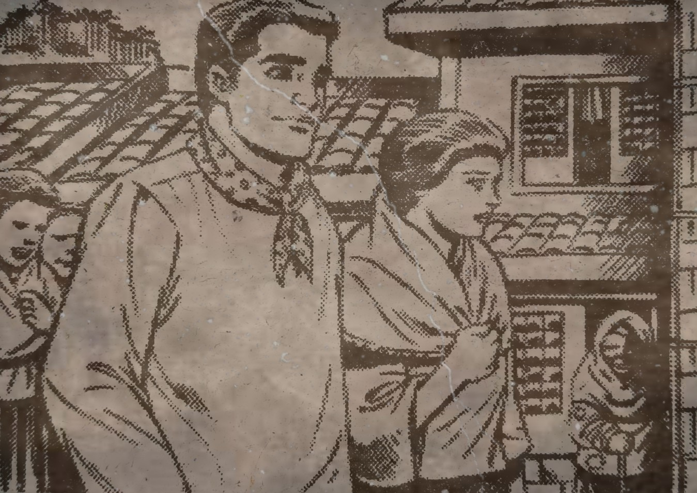

Si Kapitan Tiago ay mayroong malaking handaan para sa pista na higit na mas marangya kaysa sa bahay ng mayayaman sa San Diego .
Sinadya niyang magparami ng handa dahil nagpapasikat ito kay Ibarra na kaniyang mamanugangin. Tanyag kasi si Ibarra sa
Maynila at nailalathala pa sa mga pahayagan.
Iba’t iba ang mga handa at produktong dumarating sa bahay ni Tiago bago pa man ang bisperas ng pista. At nang makarating sa tahanan at makita ang anak,
binigyan ni Tiago si Maria Clara ng isang agnos na mayroong diyamante at Esmeralda bilang pasalubong.
Dumating na rin si Ibarra at napagusapan nila ng ama ni Maria Clara ang paaralang itatayo ni Ibarra.
Mayroong mga nag-aya kay Maria na mamasyal na pinahintulutan naman ni Tiago. Inimbutahan rin ni Kapitan si Ibarra na sa kanila na maghapunan sapagkat
darating si Padre Damaso upang makisalo ngunit nagdahilan ito na kailangan din siya sa bahay dahil baka may dumating na panauhin.
Sumama naman si Ibarra sa katipang si Maria sa pamamasyal kasama ang mga kaibigan ng dalaga pati si Tita Isabel at Sinang na pinagpaalam sa knayang Ama.
Nang makarating sa plasa, nakita nina Maria ang isang lalaking ketongin na umaawit sa tugtog ng kaniyang gitara. Habang pinandidirihan ng lahat ang ketongin,
naawa si Maria dito at iniabot ang pasalubong na mamahaling agnos ng ama. Sa tuwa, lumuhod sa pasasalamat ang ketongin.
Maya-maya pa ay dumating naman si Sisa at mahigpit na hinawakan ang kamay ng ketongin upang magdasal. Itinuro nito ang kampanaryo at sinabing naroon ang anak na si Basilio.
Itinuro din niya ang kumbento at sinabing naroon ang anak na si Crispin. Umalis din agad si Sisa, gayundin ang matandang ketongin.At ipingangako naman ni Crisostomo Kay
Maria Clara na tutulungan niya si Sisa.
Repleksyon
Mababatid sa kabanatang ito ang dalawang uri ng buhay. Mayroong mga mayayaman at mararangya ang buhay, habang mayroong mga inaalipusta at mahihirap.
Gayunman, mayroon namang mga may mabubuting puso na bukas sa pagtulong sa kanilang kapuwa kahit na sila din mismo ay nahihirapan.
Mahalagang Tauhan
Sisa
Si Narsisa o Sisa ay nakatira sa San Diego.Asawa ni Pedro at napakamapagmahal na ina sa kaniyang dalawang anak na sina
Basilio at Crispin ngunit siya nabaliw ng nawala ang kanyang mga anak kayat lumaboy na lamang siya sa lungsod nila at hinahanap ang kanyang mga anak.
Buod at repleksyon ni: Krish Anne De Sagun